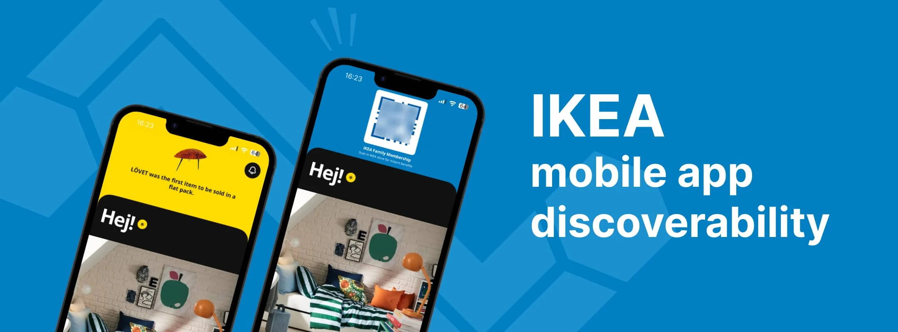

Improving discoverability in IKEA's membership journey
※Not affiliated with IKEA
An independent UX case study exploring how information architecture and interaction design can reduce friction during a time-sensitive checkout experience.
- Tools
- Figma
- Field
- UX/UI Design
- Stakeholder
- Independent design project
※Not affiliated with IKEA

Background
I'm a frequent IKEA customer and I've used their mobile app for years.
Yet whenever I visited a store, I found myself struggling to locate my IKEA Family QR code at checkout.
This step felt slower and more mentally demanding than it should, and as a customer it felt frustrating delaying the checkout queue.
Although accessible within the app, the navigation wasn't intuitive, creating unnecessary hesitation in an already time-sensitive situation.
Problem
It's practical at home, but not in store.
Standing in a checkout queue introduces a very different context than casually browsing the app at home.
In this environment, reducing even a few seconds of hesitation can noticeably improve the experience, as the customers are dealing with everything from limited mobility from carrying shopping bags to distractions from a loud and high-traffic environment.
Opportunity
The goal of this case study is to make a frequently used membership feature easier to recognise and access, particularly in a busy physical retail environment.
Interestingly, I recently noticed IKEA Shibuya had placed instructions on its self-checkout terminals showing customers how to navigate to the QR code. This suggested that finding the feature might be a common point of friction.
Research & key findings
As this was an independent case study, I didn't have access to IKEA's internal research or product analytics. Instead, I reviewed the existing user journey, mapped the information architecture and compared it with other Japanese retail apps.
Discoverability
The QR code was only two taps away, but the navigation wasn't particularly intuitive.
Content hierarchy
Frequently used payment and membership features were competing with less relevant account activities.
Usage context
Customers often need to access the app one-handed, with limited attention while managing their belongings at checkout.
I also found that several Japanese retail apps make membership cards accessible directly from the account screen, often within one tap.
This highlighted an opportunity to improve accessibility without adding more navigation.
Design iteration
Using a content hierarchy guide I explored ways to reorganise the existing content and make frequently used features easier to access.
The main focus was to:
- Prioritise payment and membership-related features
- Reduce unnecessary navigation
- Make better use of the available screen space
Design solution
Rather than introducing new functionality, I focused on restructuring the existing profile screen. This puts less cognitive strain on the user having to re-learn the entire journey.
QR code accessibility
Removed the separate Wallet screen and moved the IKEA Family QR code directly onto the profile.
Content hierarchy
Reorganised account actions to prioritise payment, membership and points-related features.
Profile navigation
Replaced the first-name initial with a recognisable profile icon, making the purpose of the section clearer.
Member benefits
Made rewards, points and workshops more visible within the profile.
Quick access
Repurposed the existing home-screen pull-down interaction to display the membership QR code.
Design proposal
The redesign focuses on improving the existing experience through relatively small changes to navigation, content hierarchy and interaction.
Key changes included:
- Surfacing the IKEA Family QR code earlier in the journey
- Reorganising frequently used account actions to reduce unnecessary navigation
- Improving visual hierarchy
- Making better use of above-the-fold content to communicate membership value
Reflection
This project made me look more closely at how the context in which an app is used affects the way people interact with it. What might seem like a straightforward navigation task in a relaxed environment can become unnecessarily difficult when users are in a hurry or distracted. It reinforced the importance of designing for the actual context of use and not just the interface itself.
Lastly, the concept demonstrates how relatively small structural changes can improve usability without requiring a complete visual redesign.
Next steps: Validate the proposed navigation through usability testing, task-completion benchmarking and A/B testing.